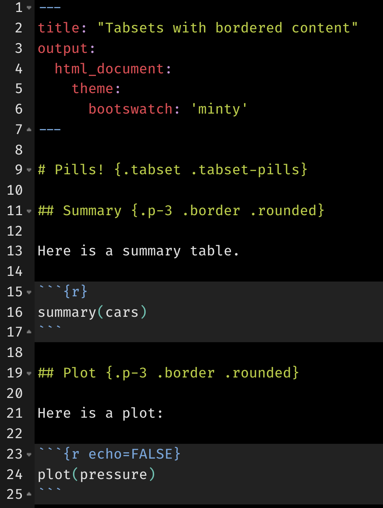

Bootstrap 4 (and above) comes with a suite of handy utility classes for handling common yet fickle styling issues like spacing, borders, sizing, layout, colors, and more.
Add margin
If you look at the source for the theme demo app, the actionButton() logic makes use of the margin spacing (m-2) to add some spacing between the buttons (they also make use of button modifier classes to achieve their different background colors).
actionButton("primary", "Primary", icon("product-hunt"), class = "btn-primary m-2")
actionButton("secondary", "Secondary (default)", class = "m-2")
actionButton("success", "Success", icon("check"), class = "btn-success m-2")It’s worth noting that actionButton(), like many other core shiny UI components, doesn’t actually have an explicit class argument, but it does route implicit arguments (i.e., ...) to its top-level HTML tag, which is why actionButton(..., class = "btn-primary") add the class in the appropriate place. Another place where this top-level class can be useful is for customizing the body of a tabPanel().
Add padding, borders, and alignment
By default, tabset panels don’t come with any padding or border(s) around the body’s content, which can make it appears though the content is just floating in space:
tabsetPanel(
tabPanel("One", "No padding"),
tabPanel("Two", "Very sad!")
)
We can help solve this issue by adding some padding the tab’s content (p-3) as well as a nice border that matches up with the tab’s borders.
tab <- function(...) {
shiny::tabPanel(..., class = "p-3 border border-top-0 rounded-bottom")
}
tabsetPanel(
tab("One", "With padding"),
tab("Two", "Nice!")
)
And for tabsetPanel(type="pills") , it looks a bit better to have a full, rounded, border:
pill <- function(...) {
shiny::tabPanel(..., class = "p-3 border rounded")
}
tabsetPanel(
type = "pills",
pill("One", "With padding"),
pill("Two", "Nice!")
)
It’s also worth noting that you can also add these classes to rmarkdown tabsets, like so:


Unfortunately, we can’t always rely on the class argument placing itself on the HTML tag we need to achieve our styling goals. For example, we can’t simply do tabsetPanel(class = "justify-content-center", ...) to horizontally center a tabset. We can, however, leverage Sass’s @extend rule to essentially add utility classes to the relevant HTML element(s):
fluidPage(
theme = bs_theme() %>%
bs_add_rules("#my-nav { @extend .justify-content-center }"),
tabsetPanel(
type = "pills", id = "my-nav",
pill("One", "With padding"),
pill("Two", "Nice!")
)
)
Add background color
Add a bg-* class to any HTML element to set not only its background color to a theme color (e.g., primary, secondary, etc), but note that it’ll also make sure the foreground color properly contrasts the background color (i.e., the foreground switches from white/black intelligently based on dark/light background). Here we use bg-primary on a BS4 card containing a {DT} table.
bs4_card <- function(body, title) {
div(
class = "card",
div(class = "card-header bg-primary", title),
div(class = "card-body d-flex justify-content-center", body)
)
}
shinyApp(
fluidPage(
theme = bslib::bs_theme(primary = "orange"),
uiOutput("dat")
),
function(input, output) {
output$dat <- renderUI({
table <- DT::datatable(mtcars, fillContainer = TRUE, style = "bootstrap4", rownames = FALSE)
bs4_card(table, "The mtcars dataset")
})
}
)
Create new utility classes
Bootstrap Sass also has a handful of Sass maps which allow for easy creation and/or modification of utility classes. One such case is for creating your own background color utility classes, say bg-flair via the $theme-colors map. This could be useful if you wanted to let the $primary be the default $blue, but use a bg-flair instead of bg-primary to color the card’s title:
bs_theme("theme-colors" = "('flair': orange)")